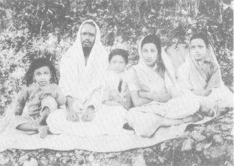

FAMILY SADHANA
The course of family sadhana in the West in the 1970’s is a difficult one to practice. Whereas in the past in both East and West there have been precise models these have been built around a culture and tradition which was supportive of this practice. In Western culture the support system has been destroyed by the industrial revolution and the money economy which has caused the virtual destruction of the family as a spiritual and psychic union by compelling at least one and often both principal members to become money earners. This necessitates daily absence from the home and reliance on day-care centers, nursery schools or regular schools to provide a spiritual foundation which one cannot expect them to provide as they essentially are educating and directing children to become “good members” of the same society which is in essence profane and in extension looking only to continue its existence at the present level of consciousness. Consequently the family is dispersed, its members isolated from each other and effectively only together as an economic and sleeping unit. The family thus has no center to radiate from and no spiritual-psychic support system. It is dead. The outlook is bleak from this vantage point.
However, in the last decade there has been a resurgence of spiritual life brought about by lysergic acid, the bomb, rock ‘n’ roll, visiting teachers from the East and the incredible vacuum and death that is the rot at the core. And as life will not permit a vacuum, the times they are a-changing.
SO
HOW?
TO BEGIN?
To begin we must begin at the beginning. At the beginning is the spirit. Spirit is a Latin word meaning breath. It’s like breathing out and breathing in, NO THING-yup, no thing. And this no thing is basic for our life. Breathe spirit, this spirit which sustains and maintains, without which we die to this form. This no thing is the foundation upon which all must be based. Life must be dedicated to the spirit alone for as it has been laid out . . . seek you first the kingdom of heaven and all else shall be added to you . . . so . . . with the family sadhana as with all sadhana this is where we begin. The family and all it is thru/by/in extension must be dedicated solely to the spirit.
Next:
An earth-real consideration of physical plane realities. Food, shelter, and clothing. An examination in truth of real needs. Not desires, not fantasies, but you know: how many pairs of pants? what kind of food? what type of shelter? how big? who for? where? and then?
HOW NOW
Can you afford to take a cut? Can you afford not to? Can you and will you let go of all the things and values and trips that you have gotten caught in? If you can adapt your present means of livelihood to your spiritual work than you’re cool. (See section on “Money and Right Livelihood.”) If you can’t then you’ll probably have to make a radical change in your life. Try getting into subsistence economy. Just making it. Not too much not too little but just enough to make it. Buy an old farm (there’re lots—cheap) or set up a craft scene. Use the system to teach yourself how to operate these well and efficiently. Keep it all together. Run a good ship. This is our second base. Apply consciousness clearly. Understand values. Don’t be afraid to make mistakes but don’t court disaster.
Why a farm, why a small craft scene? Just this. The family can “be” together. There are functions in these situations for all the members from the children to the adults. The work is clear and definite. Jesus was a carpenter. Gandhi spun. This daily concern with the vehicle of sustenance on the gross plane must be clear, straight and simple. As work/time/space is shared (based all ways on the spirit) a family grows together. Here exists mutuality, trust, openness, a psychic organism develops—this is what a family is. The possibilities on this level are endless: farm, crafts, natural food store, general store, restaurant, creamery, small paper, bookstore. Drop into reality.
Now we have an environment and a basis for practice.
First turn the environment into a shrine, a temple. If the family is primarily bhakti, plaster the walls with holy pictures, light incense, radiate love; if it’s Christian make it a home for Christ; if it’s more austere, moving toward Zen, reflect nothingness. Whatever your trip make the whole environment support it.
Next set up a clear movement thru time. Rise daily at the same time, meditate together, pray together, offer all actions to the spirit, offer all food to the spirit, cook in love for love, keep the home clean, calm and clear so if Lord Buddha walked in he’d feel right at home. Maintain the body as a temple, clean it, feed it, take good care of it, have compassion for it, love it. The discipline of a daily schedule is a drag at first, after a while you will feel the results. It all runs on automatic. Don’t think. Fill your whole mind with the spirit. BE! And in being together in the spirit be in love together. It’s all making love. Make love in beauty, in joy, in seeing each other in truth, choose your marriage model. The Sun and the Moon, Heaven and Earth, Yab-Yum, Shiva-Shakti, Siva and Parvati, the Eternal Companions, the Alchemical Marriage, Mohammed and his Wives, Adam and Eve, Christ and his Bride.
Let the man worship woman as God, the Holy Mother, the Divine Shakti, the Mana, the Food of Life, the Sustainer of Being, Isis, Astarte, the Good Earth, Terrible Kali, and Herself—All Of It. She is all of it.
Let the woman worship man as God, the Son, the Sun, the Father, the Lite of Her Life, the Creator, the Provider, as Jesus, as Ram, as Shiva, as Krishna, as all of them and Himself.
Surrender and die to one another. Become one. The glorious Mystic Rose in the garden of the Heavenly Father. Permeate the universe, fill it, become it for this is the union beyond duality.
O Holy Family
This is the seat of the practice.
And as the children who are the fruit of the union appear, see them as divine avatars, holy beings who have come recently from our true HOME to teach. Nourish and feed them as they feed you. Listen for their tone, see their ray so as to help them fulfill their spiritual destiny, provide a matrix for their consciousness. Great care must be taken to guide the entity on this plane. Choose carefully the initial impressions which they will be registering as you would the food they eat. They are the hope and destiny of the universe. Respect and honor them. Guide them clearly. Keep the home calm and free of chaotic inputs. Let love burn in all the lamps. Thru all of this face and cope out the difficulties. For the woman there will be the heavy pull of the earth element. The children will feel any psychic withdrawal on her part. She must find a place a little removed for deep meditation. When they wake up during meditation explain clearly what you are doing. Read them holy stories to acquaint them with spirit life so that they may remember. Keep your practice regular and the children will stay in tune. Don’t trip too far too fast or psychic disequilibrium will upset months of work. Do not sacrifice relationships with the children for what you may think is spiritual necessity. The whole thing is sadhana. Chant mantras together. The first word of one infant here was Allah (God). Children really love bhajan. They go around singing Bhaja Shri Krishna Chaitanya or Om Sri Ram Jai Ram Jai Jai Ram. Bring them in. Sing together.
For men it’s most often astral tripping. Far out trips in far out worlds that get so far out they become disconnected and then have to find someone to understand and then its Drama Drama Drama instead of Rama Rama Rama. Men struggle with death and rebirth and fear it’s a tough trip alone and being together makes it both easier and harder. The key to it all is absolute and total surrender to the spirit. With this it is all possible.
The real difficulty in family sadhana seems to be in the maintenance over a long period of time of the discipline. In most other sadhana there is either overt or covert reliance on a sangha. In any given area there are just not that many people who will gravitate towards family sadhana. Most people are on their own spiritual paths. While it is true that these people constitute a sangha of sorts the uniqueness of family sadhana makes it difficult to tie all of this together. A very good alternative is to join together with others and form a spiritual community. That is, a community constituted solely for spiritual purposes.
In the end this is the nut. It’s all or nothing. Constantly revised schedules to squeeze the Spirit in for 10 or 20 minutes a day won’t make it. This is not criticism but observation. The practice is fierce because it is so easy to forget and fall asleep. The families we have seen who are practicing in communal context (using a vehicle disciplines ranging from Sufi ecstatic practice thru Christian fellowship and Hindu bhakti to deep Soto Zen practice) seem to be getting on with it.
